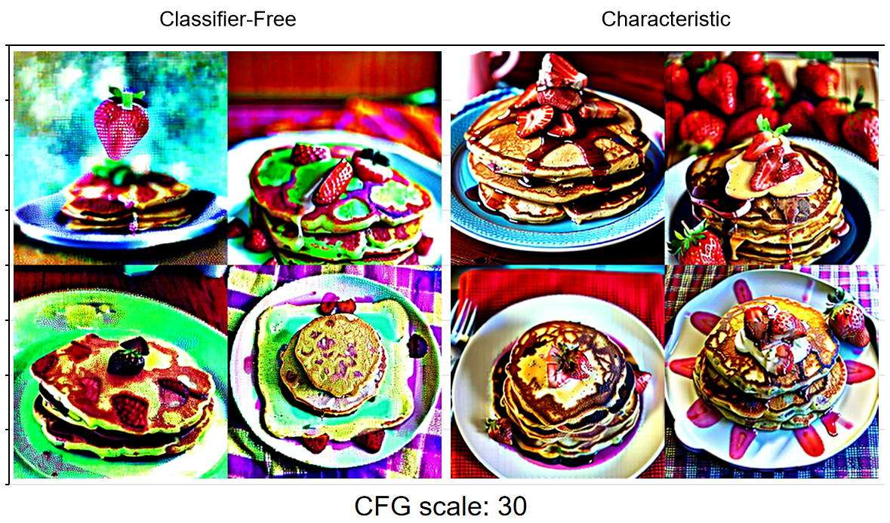

newspaper, news, english
Batch size: 1
Steps: 40, Sampler: DPM++ 2M Karras, CFG scale: 10, Seed: 3470006633, Size: 512x512, Model hash: 1a189f0be6, Model: v1-5-pruned, VAE hash: 735e4c3a44, VAE: vae-ft-mse-840000-ema-pruned.safetensors,
(CHG) Characteristic Guidance: True, (CHG) Regularization Strength: 1, (CHG) Regularization Range Over Time: 1, (CHG) Max Num. Characteristic Iteration: 50, (CHG) Num. Basis for Correction: 1, (CHG) Reuse Correction of Previous Iteration: 0, (CHG) Log 10 Tolerance for Iteration Convergence: -4, (CHG) Iteration Step Size: 1, (CHG) Regularization Annealing Speed: 0.4, (CHG) Regularization Annealing Strength: 0.5, (CHG) AA Iteration Memory Size: 2,
Version: v1.6.1

strawberry pancake
strawberry pancake
Batch size: 4
Steps: 20, Sampler: UniPC, CFG scale: 30, Seed: 669228313, Size: 512x512, Model hash: c0d1994c73, Model: realisticVisionV20_v20, VAE hash: 735e4c3a44, VAE: vae-ft-mse-840000-ema-pruned.safetensors,
Characteristic Guidance: (CHG) Characteristic Guidance: True, (CHG) Regularization Strength: 1.5, (CHG) Regularization Range Over Time: 1, (CHG) Max Num. Characteristic Iteration: 30, (CHG) Num. Basis for Correction: 1, (CHG) Reuse Correction of Previous Iteration: 0, (CHG) Log 10 Tolerance for Iteration Convergence: -4, (CHG) Iteration Step Size: 1, (CHG) Regularization Annealing Speed: 0.4, (CHG) Regularization Annealing Strength: 0.5, (CHG) AA Iteration Memory Size: 2,
Version: v1.6.1

a birthday party with four dogs
Batch size: 4
Steps: 20, Sampler: UniPC, CFG scale: 10, Seed: 2693088926, Size: 512x512, Model hash: c0d1994c73, Model: realisticVisionV20_v20, VAE hash: 735e4c3a44, VAE: vae-ft-mse-840000-ema-pruned.safetensors,
Characteristic Guidance: (CHG) Characteristic Guidance: True, (CHG) Regularization Strength: 1, (CHG) Regularization Range Over Time: 1, (CHG) Max Num. Characteristic Iteration: 30, (CHG) Num. Basis for Correction: 1, (CHG) Reuse Correction of Previous Iteration: 0, (CHG) Log 10 Tolerance for Iteration Convergence: -4, (CHG) Iteration Step Size: 1, (CHG) Regularization Annealing Speed: 0.4, (CHG) Regularization Annealing Strength: 0.5, (CHG) AA Iteration Memory Size: 2,
Version: v1.6.1

1girl, earring
Batch size: 4
Steps: 40, Sampler: DPM++ 2M Karras, CFG scale: 30, Seed: 209458356, Size: 512x512, Model hash: 00bafa0e71, Model: anyloraCheckpoint_novaeFp16, VAE hash: 735e4c3a44, VAE: vae-ft-mse-840000-ema-pruned.safetensors
Characteristic Guidance: (CHG) Characteristic Guidance: True, (CHG) Regularization Strength: 1, (CHG) Regularization Range Over Time: 1, (CHG) Max Num. Characteristic Iteration: 30, (CHG) Num. Basis for Correction: 1, (CHG) Reuse Correction of Previous Iteration: 0, (CHG) Log 10 Tolerance for Iteration Convergence: -4, (CHG) Iteration Step Size: 1, (CHG) Regularization Annealing Speed: 0.4, (CHG) Regularization Annealing Strength: 0.5, (CHG) AA Iteration Memory Size: 2,
Version: v1.6.1